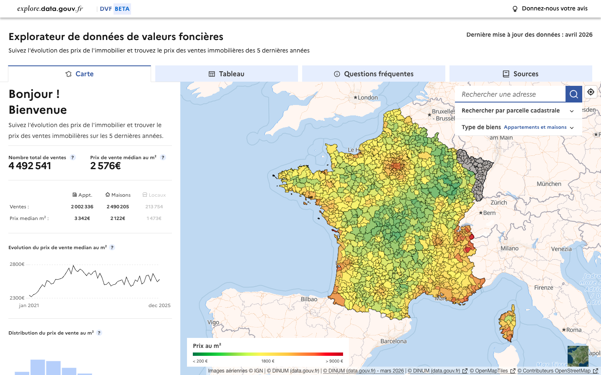
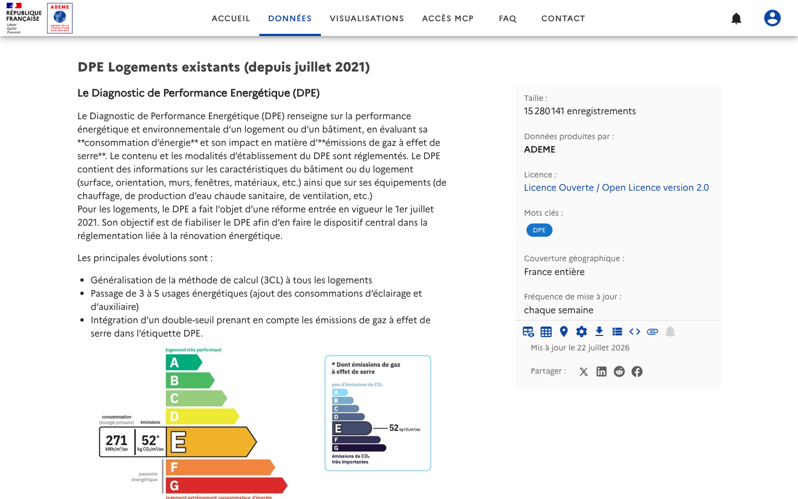
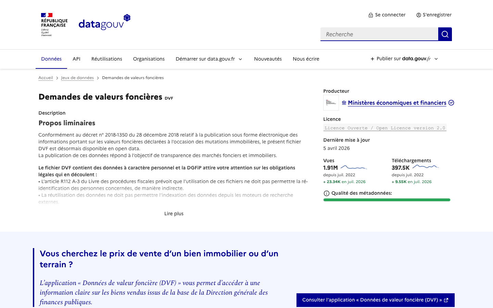
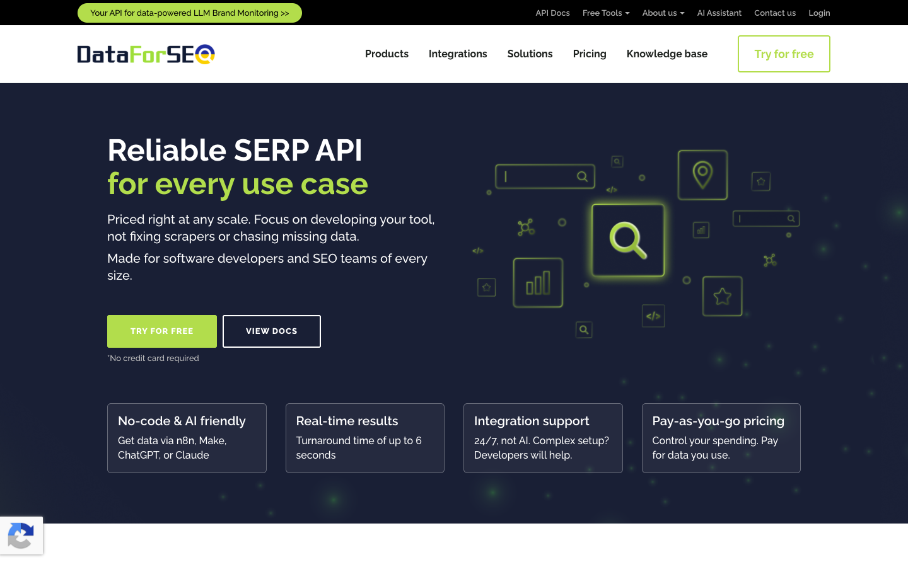
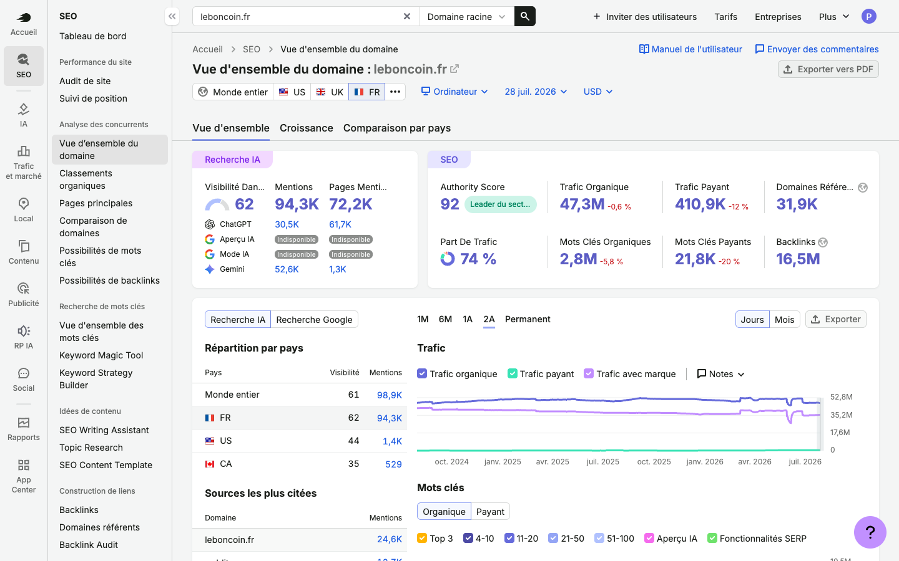
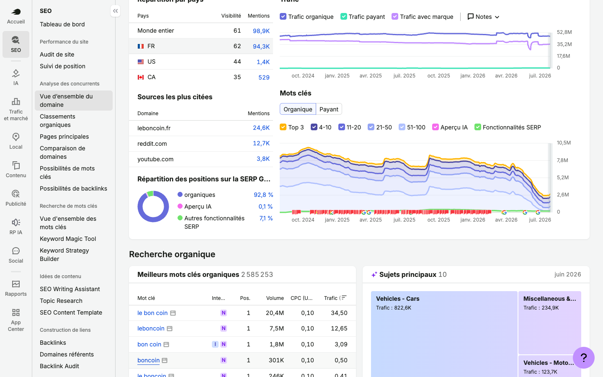

Comment on passe de vos 18 contenus par mois, contraints par la mesure et la publication, à une chaîne outillée dont vous devenez propriétaires.
01Ce que la content factory change concrètement
02L'anatomie du cockpit : machinerie et valorisation
03Le workflow déroulé, étape par étape
04Les quatre phases, les chantiers, le calendrier
05La donnée qui alimente la machine : data interne, sources publiques, API
06AI Overviews et visibilité IA, intégrées au dispositif
Document interactif : flèches du clavier pour naviguer, clic sur les éléments soulignés d'un point jaune, clic sur les captures pour zoomer.
confidentiel
Ce que la content factory change, concrètement
Le sujet n'est pas de produire plus vite du contenu. C'est de supprimer les étapes qui vous coûtent du temps sans créer de valeur, et de rendre chaque décision éditoriale justifiable par une donnée.
Comparerle bascule masque une colonne pour lire l'écart
Étape du cycle
Aujourd'hui
Avec la content factory
Ce que vous y gagnez
Trouver les sujets
Veille manuelle, arbitrage en réunion, priorisation à l'intuition
Backlog alimenté en continu par la veille, les tendances et vos trending topics, chaque sujet arrive scoré
Le comité tranche au lieu de chercher
Prioriser
Discussion, pas de critère commun entre SEO et édito
Score sur 100, quatre familles de critères, sortie P1 / P2 / P3
Un langage commun SEO et édito
Briefer
Brief rédigé à la main, sources à rassembler
Brief généré : structure Hn, intention SERP, sources, data propriétaire déjà injectée
Le temps de brief passe dans l'expertise
Produire
Rédaction externalisée, allers-retours
Rédaction experte outillée, scoring sémantique jusqu'à dépasser le meilleur concurrent
Moins d'allers-retours, niveau constant
Publier
Saisie champ par champ, images à redimensionner
Fiche prête à publier poussée dans Jira, formats anticipés pour votre futur outil
Le goulot est contourné, pas subi
Mesurer
Angle mort : impossible de dire si un contenu fonctionne
Chaque contenu part avec son objectif, ses signaux, son suivi SEO et IA
On sait quoi refaire et quoi arrêter
Les deux goulots que vous nous avez décrits, la mesure et la publication, sont traités en premier. La mesure parce que chaque contenu part avec son objectif et ses signaux de succès. La publication parce que la sortie du dispositif s'adapte à votre back-office actuel, puis à votre futur outil sans rien reconstruire.
confidentiel
L'anatomie du cockpit
Un seul outil, deux moteurs. La machinerie instruit et produit. La valorisation maintient vivants les contenus qui reposent sur de la donnée qui bouge. cliquez sur un module pour le détail
Moteur 01
La machinerie
Elle transforme un signal de demande en contenu prêt à publier.
Collecte : veille, tendances, concurrents, vos trending topics, requêtes GSC en perte
Instruction : intention SERP, scrape du top 3, PAA, formats repérés chez les concurrents
Scoring : la vingtaine de critères, sortie P1 / P2 / P3
Génération de brief : title, meta, Hn, bloc à retenir, sources, angle, maillage
Production : rédaction experte, scoring sémantique, relecture humaine sur YMYL
Sortie : fiche Jira, statut, owner, date de publication
Moteur 02
La valorisation
Elle empêche vos contenus de vieillir, et transforme la donnée en actif renouvelable.
Rotation programmée : prix au m² par quartier, taux, cotes, volumes rafraîchis à date fixe
Détection d'obsolescence : contenus non retouchés depuis six mois, ou donnée source qui a bougé
Refresh assisté : le cockpit prépare la mise à jour, l'humain valide
Déclinaison : un baromètre national décliné en régions quand le volume le justifie
Suivi de citation : qui reprend vos chiffres, quels moteurs IA vous citent
Pourquoi séparer les deux. La machinerie répond à la question « quoi produire maintenant », la valorisation à la question « qu'est-ce qui perd de la valeur en ce moment ». Ce sont deux flux distincts, et le second est celui que la plupart des dispositifs éditoriaux oublient, alors que c'est lui qui fait tenir le SEO dans la durée.
confidentiel
Le workflow déroulé, étape par étape
La même colonne vertébrale, deux états : elle tourne dès aujourd'hui dans vos contraintes, et se reconfigure quand votre outil de publication et vos accès data évoluent. cliquez sur chaque étape
État du dispositif
confidentiel
Quatre phases, du cadrage à l'amplification
Le dispositif se construit par paliers. À chaque phase, un périmètre réduit, un livrable qui vous appartient, et une décision de passage à la suivante. cliquez sur une phase pour son livrable
Phase 01 · M1
Cadrer
Ateliers avec SEO et édito, on dessine le flux au tableau
Inventaire des accès data et des droits
Définition des règles de validation et du RACI
Cadre de mesure posé avant de produire
Livrable : spécification du cockpit et cartographie data
Phase 02 · M2-M3
Prototyper
POC sur deux territoires B2C et une verticale B2B
Connecteurs branchés en préproduction
Tests réels des appels API et de leur coût
Premiers briefs scorés soumis au comité
Livrable : cockpit v1 fonctionnel sur périmètre réduit
Phase 03 · M3-M4
Fiabiliser
Reparamétrage sur vos retours d'usage
Bascule des 18 contenus mensuels dans le flux
Extension aux verticales restantes
Premiers indicateurs de performance lisibles
Livrable : cockpit en production sur tout le périmètre
Phase 04 · M5-M6
Amplifier
Montée en volumétrie au rythme de votre back-office
Formation de vos équipes à l'outil
Transfert de propriété de la stack
datashake passe en maintenance et forte valeur ajoutée
Livrable : autonomie outillée et documentation
Le principe du POC restreint
On ne branche pas dix connecteurs le premier mois. On en branche deux ou trois sur un périmètre où l'on peut mesurer vite, on constate le coût réel des appels et la qualité de la donnée, puis on étend. C'est ce qui évite le dispositif surdimensionné qui ne sert jamais.
Une porte de sortie à chaque phase
Aucune phase n'engage la suivante. Si le POC démontre qu'un connecteur ne vaut pas son coût, il ne passe pas en production.
confidentiel
Les chantiers techniques
Quatre chantiers, menés en parallèle sur les phases 1 et 2. Chacun a un critère de sortie vérifiable, pas une case cochée. cliquez sur une ligne pour la mettre en évidence
#
Chantier
Ce qu'on fait
Dépendance côté leboncoin
Critère de sortie
01
Accès à la data propriétaire
Cadrer la forme d'accès aux études internes, à la data des annonces et aux trending topics : export programmé, accès à un entrepôt, ou requête à l'équipe data
Interlocuteur data et validation juridique sur l'usage public des chiffres
Un jeu de données réel exploité dans un contenu test
02
Connecteurs externes
Brancher les sources ouvertes utiles par verticale et les API tierces retenues, avec cache pour maîtriser le coût des appels
Choix des licences et validation des budgets d'appels
Rafraîchissement automatique testé sur un cycle complet
03
Cockpit et sortie Jira
Backlog, scoring, génération de brief, statuts, et création automatique de la fiche Jira avec structure et sources
Accès Jira et convention de nommage des tickets
Une fiche créée de bout en bout sans intervention manuelle
04
Cadre de mesure
Définir les indicateurs par type de contenu, brancher les sources de mesure disponibles, produire le reporting qui manque aujourd'hui
Accès Search Console et arbitrage sur les limites de Piano
Un tableau de bord qui répond à « ce contenu a-t-il fonctionné »
Le point d'attention numéro un, dit franchement. Le chantier 01 est le seul que nous ne pouvons pas mener seuls, et c'est celui qui porte la promesse de différenciation face à l'IA. Sans accès concret et régulier à votre donnée, la content factory reste une belle mécanique alimentée par des sources que vos concurrents ont aussi. C'est le premier sujet à traiter au cadrage.
confidentiel
Les chantiers d'organisation
Un outil ne remplace pas une décision. Le dispositif tient sur un rituel court, des rôles clairs, et le fait que vous gardiez la main éditoriale de bout en bout.
Le comité éditorial
30 minutes, une fois par semaine. Le format tient parce que les sujets arrivent instruits.
Revue des sujets scorés au-dessus du seuil
Arbitrage des tendances et de l'actualité chaude
Validation ou report, avec la raison consignée
Point rapide sur les contenus publiés et leurs premiers signaux
Complété par un point stratégique mensuel et une revue trimestrielle de la stratégie éditoriale.
Qui fait quoi
leboncoin
datashake
Cibles stratégiques et mots-clés prioritaires
Pilote
Contribue
Veille, détection et proposition de sujets
Contribue
Pilote
Scoring et priorisation du backlog
Valide
Pilote
Arbitrage final des sujets produits
Décide
Recommande
Brief, angle, sources et preuve
Valide
Pilote
Production éditoriale et optimisation
Relit
Pilote
Validation finale et publication
Pilote
Assiste
Mesure et lecture de la performance
Copilote
Copilote
Évolution de l'outil et maintenance
Valide
Pilote
Ce que ça implique pour nous. Vous nous avez dit vouloir être challengés plutôt que servis. Concrètement : nous arrivons en comité avec des sujets que vous n'avez pas demandés, des refus argumentés sur des sujets que vous proposez, et des chiffres pour trancher. C'est le mode de collaboration que nous proposons.
confidentiel
Le calendrier consolidé
Six mois pour un dispositif pleinement opérationnel, avec de la production dès le deuxième mois. La montée en charge est progressive, elle suit vos capacités de publication.
M1
Ateliers de cadrage
Cartographie data
Cadre de mesure
Production au rythme actuel
M2
Connecteurs en préprod
Cockpit v1
Premiers briefs scorés
Production au rythme actuel
M3
POC 2 B2C + 1 B2B
Tests appels API
Comité hebdomadaire installé
Bascule progressive
M4
Reparamétrage
Extension verticales
Sortie Jira automatisée
18 contenus dans le flux
M5
Moteur de valorisation
Premiers refresh programmés
Reporting consolidé
Montée en volume
M6
Formation équipes
Documentation
Transfert de propriété
Autonomie outillée
Ce qui produit dès le M2
La production ne s'arrête jamais. Le dispositif se construit à côté du flux existant, puis l'absorbe progressivement à partir du M3.
Ce qui dépend de vous
Les accès data en M1 et la disponibilité des équipes pour les ateliers conditionnent tout le reste du calendrier.
Ce qu'on ne promet pas
Un dispositif complet au premier septembre. Ce serait faux. Ce qu'on promet, c'est de la production dès le premier mois et une machine qui tient au sixième.
confidentiel
Partie 01 · La donnée
La donnée qui alimente la machine
Trois étages de données, des API précises, et vos propres chiffres au sommet. C'est ce qui sépare un contenu que l'IA peut recopier d'un contenu que l'IA doit citer.
01Les trois étages et leur rôle respectif
02Votre data propriétaire, verticale par verticale
03Les jeux de données publics, avec les sources en situation
04Les API tierces, usage par usage
05AI Overviews et visibilité IA
06Volumétrie, coûts et maîtrise de la dépense
confidentiel
Trois étages de données, trois rôles
Chaque étage répond à une question différente. Empilés, ils produisent un contenu que ni un concurrent éditorial ni un modèle génératif ne peut fabriquer à votre place.
Étage 01
Votre donnée
Question : que dit le marché, vu de chez vous ?
Data des petites annonces : prix, volumes, délais, dispersion géographique
Études de l'équipe interne : panels, enquêtes, chiffres exclusifs
Trending topics : ce que les gens cherchent chez vous en ce moment
Rôle : la preuve non réplicable, et la première raison d'être cité par un moteur IA ou repris par un journaliste.
Étage 02
La donnée publique
Question : que dit la référence officielle ?
Transactions immobilières réelles, indices notariaux
Réglementation, fiscalité, dispositifs en vigueur
Statistiques nationales par territoire et par marché
Rôle : la caution factuelle. Elle crédibilise votre chiffre en le replaçant dans un référentiel que personne ne conteste.
Étage 03
La donnée de recherche
Question : que cherchent les gens, et qui répond déjà ?
Volumes, tendances, questions associées
Composition réelle des pages de résultats
Visibilité dans les moteurs IA et les AI Overviews
Rôle : le ciblage et la mesure. Elle décide quoi produire et permet de dire si ça a marché.
La règle que nous appliquons. Un contenu qui ne mobilise que l'étage 03 est un contenu que n'importe qui peut écrire, y compris une IA. Un contenu qui combine les trois étages devient une source. C'est ce croisement, et pas le volume de production, qui fait la différence sur les requêtes stratégiques que vous visez.
confidentiel
Votre data propriétaire, verticale par verticale
Voici ce que nous chercherions à mobiliser, marché par marché. Le détail est à confirmer au cadrage selon ce qui est réellement extractible et publiable. naviguez par verticale
Donnée mobilisable
Prix demandés au m² par ville et par quartier, à une granularité que les portails spécialisés ne publient pas
Délais de mise en ligne et évolution du stock d'annonces
Part maison contre appartement, tension par territoire
Ce qu'on en tire éditorialement
Baromètres territoriaux, cartes de tension, analyses d'évolution. L'angle signature : l'écart entre prix affiché et prix réellement signé, croisé avec la base DVF. Un chiffre que vous seuls pouvez produire, qui intéresse autant l'acheteur que la presse.
Format cible
Baromètre trimestriel national
Déclinaisons par territoire quand le volume le justifie
Pages par ville maillées vers vos listings
Concurrent frontal : SeLoger. Sa force est le prix affiché. Votre angle est l'écart au prix signé, qu'il ne peut pas produire sans vos volumes.
Donnée mobilisable
Cotes réelles pratiquées par modèle et par millésime, kilométrages moyens
Motorisations qui se vendent réellement, par département
Saisonnalité du marché de l'occasion
Ce qu'on en tire éditorialement
Guides d'achat chiffrés et analyses de décote fondés sur des prix réels, pas des estimations d'expert. La décote réelle constatée sur vos annonces, modèle par modèle, croisée aux immatriculations officielles.
Format cible
Guide par modèle, rafraîchi à la cote
Baromètre décote trimestriel
Analyses de bascule de motorisation
Concurrent frontal : La Centrale. Un arbitrage assumé : le créneau « garage plus ville » relève du local et du programmatique, on le traite côté B2B, pas frontalement en B2C.
Donnée mobilisable
Catégories en croissance et prix moyens du seconde main par famille de produits
Comportement de revente selon la saison
Vos trending topics : ce que la France cherche chez vous cette semaine
Ce qu'on en tire éditorialement
L'inspiration adossée au chiffre : combien coûte réellement d'équiper une pièce en seconde main, quand acheter, quand revendre. Le contenu déco devient utile et chiffré, au lieu de rester générique.
Format cible
Tendances saisonnières récurrentes
Guides d'achat malin
Analyses de consommation reprises par la presse
Concurrent cité : Vinted. Votre différence : la largeur des catégories (maison, électroménager, jardin) là où Vinted reste mode et accessoires.
Donnée mobilisable
Volumes d'annonces professionnelles, dynamique par région et par secteur
Comportements des acheteurs professionnels
Sirene pour dimensionner chaque marché local
Ce qu'on en tire éditorialement
Observatoires de marché à destination des pros, matière de prospection pour les commerciaux, contenu que la presse professionnelle reprend. Le potentiel le moins exploité : personne n'a pris la place de source de référence B2B sur vos verticales.
Format cible
Observatoire trimestriel par verticale
Livre blanc téléchargeable, générateur de leads
Infographies activables par les commerciaux
Objectif : installer leboncoin en partenaire business, pas seulement en lieu de transaction. Six contenus par mois, forte valeur unitaire.
Les trois questions à trancher au cadrage : la forme d'accès (export programmé, entrepôt, ou demande à l'équipe data), la fraîcheur (temps réel, mensuel, trimestriel, elle conditionne le rythme de publication), et la validation (qui autorise la publication d'un chiffre issu de vos annonces).
confidentiel
Les jeux de données publics mobilisables
Gratuits, officiels, actualisés et citables. Ils servent de référentiel pour contextualiser vos chiffres et pour traiter les sujets réglementaires que vos audiences recherchent. cliquez sur une capture pour zoomer
Source
Producteur
Verticale
Usage éditorial type
DVF, valeurs foncières
DGFiP, data.gouv
Immobilier
Confronter prix demandés et prix réellement signés
Indices notariaux
Notaires, INSEE
Immobilier
Situer une tendance locale dans le mouvement national
Base des DPE
ADEME
Immobilier
Passoires thermiques, valeur verte, obligations de location
BAN et INSEE
IGN, INSEE
Immo, auto
Contextualiser un chiffre local, comparer des territoires
Immatriculations
Min. Transports
Auto
Marché réel de l'occasion, bascules de motorisation
Sirene
INSEE
B2B
Dimensionner un marché professionnel local
Textes officiels
Légifrance
Immo, auto
Actualité juridique et fiscale avec la source primaire
Pourquoi c'est stratégique en GEO. Les moteurs génératifs privilégient les contenus qui citent des sources primaires vérifiables. Un contenu qui croise votre chiffre propriétaire avec la référence officielle coche les deux critères qui déclenchent la citation : l'exclusivité de la donnée et la traçabilité de la source.

DVF : 4,49 M de ventes réelles, prix signés par commune

ADEME : 15,2 M de DPE

data.gouv.fr : le jeu DVF officiel
Captures réelles, juillet 2026 : explorateur DVF et fiche data.gouv.fr (DGFiP), base DPE (data.ademe.fr).
confidentiel
Les API tierces, usage par usage
Le principe : une API n'entre dans la stack que si elle alimente une décision ou un contenu. Vous détenez les licences, nous les exploitons. cliquez sur les captures pour zoomer
Brique
Ce qu'elle apporte
Où elle sert dans le cockpit
Priorité
DataForSEO SERP, Labs, On-Page
Résultats de recherche à la demande, volumes, questions associées, analyse des pages positionnées, relevé des AI Overviews dans la SERP
Instruction des sujets, scrape du top 3, détection des formats concurrents, calcul du score
Phase 1
Suivi de position
Suivi quotidien des positions sur un parc de requêtes
Mesure de l'effet des contenus, détection des pertes. Vous avez déjà Yooda et SEMrush : on branche l'existant
Phase 1
Search Console
Impressions, clics, requêtes réelles, y compris le rapport dédié aux AI Overviews
Détection des contenus en perte, sujets à rafraîchir, mesure de l'exposition IA. Gratuit, déjà en place
Phase 1
Visibilité IA
Présence de la marque dans les réponses de ChatGPT, Perplexity, Gemini, sur un panel de prompts
Mesure GEO, détection des sources citées à votre place. À articuler avec votre démarche en cours
Phase 2
API métier verticales
Cotes automobiles, taux de crédit, indices sectoriels selon les besoins
Alimentation des contenus chiffrés et des baromètres à rotation
Phase 2-3
Modèles de langage
Génération assistée des briefs, structuration, aide à la rédaction
Toute la chaîne d'instruction et de production, validation humaine systématique
Phase 1

DataForSEO : la SERP en JSON, socle de l'instruction

SEMrush sur leboncoin.fr : l'existant, branché tel quel
Qui paie quoi. Licences et appels restent à votre charge, conformément à votre cadrage. Nous dimensionnons, nous exploitons : vous gardez la main sur le contrat et le budget.
Captures réelles, juillet 2026 : dataforseo.com et SEMrush (vue d'ensemble du domaine leboncoin.fr, base FR).
confidentiel
AI Overviews et visibilité IA, intégrées au dispositif
Les AI Overviews ne sont pas un sujet à part : ils entrent dans le scoring, dans le format des contenus et dans la mesure. Trois mécanismes concrets.
01 · Dans le scoring
L'exposition AIO est un critère
Chaque requête instruite est marquée : déclenche-t-elle un AI Overview, et est-il stable dans le temps ? Une SERP sans AIO est un trafic protégé, proche conversion. Une SERP avec AIO se joue autrement : il faut être la source citée.
AI Overview · requête « passoire thermique location 2026 »
Depuis le 1er janvier 2025, les logements classés G au DPE ne peuvent plus être mis en location. L'interdiction s'étendra aux logements classés F en 2028...
Reconstitution illustrative d'un AI Overview. Le relevé réel est industrialisé via l'API SERP.
02 · Dans le format
Écrire pour être cité
Bloc à retenir en tête d'article : la synthèse que les moteurs IA extraient en priorité
Tableaux de données sourcés : le format le plus repris par les réponses génératives
Chiffre exclusif + source officielle : le croisement qui force l'attribution à leboncoin
Données structurées dès que votre CMS les portera
Et un levier souvent oublié : les sources que les moteurs citent déjà. Sur vos thématiques, Reddit et les forums pèsent lourd dans les réponses IA. Les baromètres publiés donnent une raison naturelle d'y être mentionné.
03 · Dans la mesure
Suivre l'exposition, pas la subir
Rapport AIO de la Search Console : le rapport dédié isole les impressions et clics issus des réponses génératives de Google
Suivi de visibilité IA sur un panel de prompts : présence de la marque dans ChatGPT, Perplexity, Gemini
Citations obtenues : quels contenus sont repris, par quels moteurs, avec quelle attribution

Positions vs Aperçu IA, sources citées : reddit.com déjà 2e
La ligne directrice. Sur les requêtes exposées aux AI Overviews, l'objectif n'est plus seulement la position, c'est la citation. Un contenu qui publie un chiffre que personne d'autre ne détient, sourcé et structuré, est exactement ce que les moteurs génératifs reprennent et attribuent. Votre data propriétaire est votre meilleure assurance GEO.
confidentiel
Volumétrie, coûts et maîtrise de la dépense
Les licences et les appels sont à votre charge. Notre rôle est de les dimensionner honnêtement et de faire en sorte qu'ils ne dérivent pas. Voici comment nous les maîtrisons.
Les deux postes qui peuvent déraper
Les appels aux API de recherche. Un scrape du top 10 par sujet instruit, multiplié par un backlog de plusieurs dizaines de sujets et par les suivis quotidiens, monte vite si rien n'est cadré.
Les modèles de langage. C'est le poste le plus variable : il dépend du volume de briefs générés et de la longueur des contenus traités.
Les quatre garde-fous que nous posons
Cache systématique : une requête instruite n'est pas réinterrogée avant son délai de péremption
Instruction à la demande : on n'instruit que les sujets qui passent le premier filtre de score, pas tout le backlog
Plafond mensuel par source, avec alerte avant dépassement
Reporting de consommation présenté au comité, au même titre que la performance éditoriale
Ce qui est dimensionné au POC
Le coût réel des appels ne s'estime pas sur un tableur, il se constate. La phase 2 sert précisément à ça : mesurer la consommation réelle sur un périmètre restreint, puis extrapoler avec une marge de sécurité avant d'étendre.
L'arbitrage coût contre valeur
Certains contenus justifient une instruction lourde : un baromètre trimestriel qui vivra trois mois et sera cité par la presse. D'autres non : une question fréquente à faible enjeu. Le score sert aussi à ça, décider du niveau d'instruction que mérite un sujet.
Ce que nous savons déjà
Sur des dispositifs comparables, la dépense en outillage et en appels reste très inférieure au coût du temps humain qu'elle remplace. C'est la comparaison que nous vous proposons de suivre, mois après mois, plutôt que de regarder la ligne API isolément.
Les ordres de grandeur précis seront chiffrés en phase de cadrage, une fois arrêtés le périmètre de sources et le volume de sujets instruits par mois.
1 / 15
flèches pour naviguer · S sommaire · clic sur les captures pour zoomer